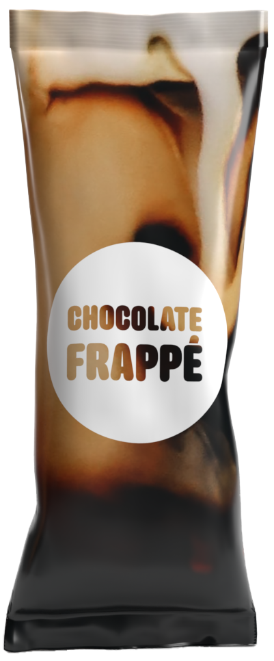
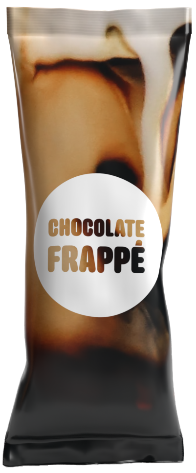

Smaken Av Sjokolade
Chocolate Frappé er laget med ekte Sjokolade.
Sjokoladen vår er produsert i sveits. Sjokoladen blir deretter fraktet
til fabrikken hvor de pulveriseres. Dette pulveret blir tilsatt vår originale
Ice Coffee Frappé oppskrift. Dermed får du den gode smaken av Sjokolade med
vår Chocolate Frappé.
Frappé-en blir deretter pakket inn i poser og inn i esken, hvor den fraktes til din nærbutikk. Våre
Frappé-er selges i de fleste norske matbutikker. Du finner dem i alle Coop butikker, Rema 1000 og Kiwi.
Frappé-en havner deretter i ditt hus etter du har kjøpt det, og du kan blande den med melken du elsker
eller bruke oppskriften under, og nytes av deg!
Er Chocolate Frappé din favoritt? Stem på din favoritt på fremsiden og bli med i trekningen av 1 års
forbruk!
 

Ekstra godt med iskrem
Bland en pose med Nescafe Chocolate Frappé, en kule med Sjokolade eller vaniljeiskrem,
0.85
dl kald melk
(laktosefri, hvetemelk eller mandelmelk fungerer også), og 4 isbiter i en shaker eller mixer.
Bland grundig og den kan serveres som den er eller med krem på toppen. Nyt din Chocolate Frappé
dessert!